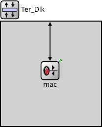

Package: Nodes._10_Terminal._20_Data_Link
Ter_Dlk
compound module(no description)

Usage diagram
The following diagram shows usage relationships between types. Unresolved types are missing from the diagram.
Used in compound modules
| Name | Type | Description |
|---|---|---|
| Terminal | compound module | (no description) |
Properties
| Name | Value | Description |
|---|---|---|
| display | i=block/layer |
Gates
| Name | Direction | Size | Description |
|---|---|---|---|
| upperIn | input | ||
| upperOut | output | ||
| lowerIn | input | ||
| lowerOut | output |
Source code
module Ter_Dlk { parameters: @display("i=block/layer"); gates: input upperIn @optional; output upperOut @optional; input lowerIn @optional; output lowerOut @optional; submodules: mac: Ter_Dlk_kMac { @display("p=100,100"); } connections allowunconnected: // Normal layer stack connection (from network layer) upperIn --> mac.upperLayerIn; mac.upperLayerOut --> upperOut; // Physical layer connections lowerIn --> mac.lowerLayerIn; mac.lowerLayerOut --> lowerOut; }File: src/Nodes/_10_Terminal/_20_Data_Link/Ter_Dlk.ned
 This documentation is released under the Creative Commons license
This documentation is released under the Creative Commons license